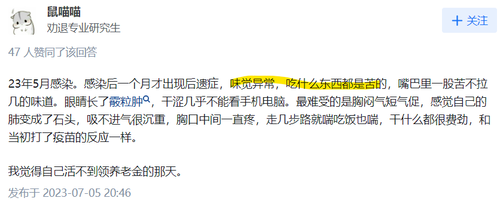
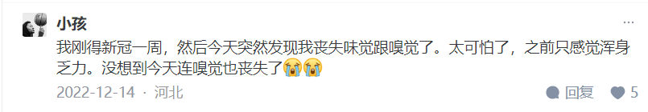

新冠有哪些后遗症
新冠病毒感染后可能导致多种后遗症，常见的包括但不限于：
疲劳和乏力：许多感染者在康复后仍感到持续的疲劳和乏力，可能影响日常生活和工作。
呼吸系统问题：包括呼吸困难、气促等症状，尤其是对于曾经严重感染或需要呼吸机支持的患者。
心脏问题：如心肌炎、心律失常等，可能导致长期心脏健康问题。
神经系统和精神健康：可能出现头痛、注意力集中困难、失眠、抑郁等问题。
消化系统问题：如胃肠炎、胃痛、食欲减退等。
关节疼痛：可能表现为关节疼痛和炎症。
免疫系统失调：某些患者可能会出现自身免疫性疾病的发作或加重。
其他：还包括肾脏功能异常、皮肤问题等。
这些后遗症的出现可能与个体健康状况、感染的严重程度、治疗方法等有关，而且还在持续研究中。及时的康复和医学跟进对于减少并处理这些后遗症至关重要。
一，更容易猝死
47岁顶级程序员陈皓，因心梗离世
2022.12.10 感染新冠的经历
新京剧创立人储兰兰病逝年仅40岁,死因是新冠
24岁网红依川川去世
52岁山东临沂退役女兵中飞燕（王小艳）去世, 在2022年的最后一天，王小艳突然发文称自己阳了一周，不想吃不想喝
死前感染了新冠病毒。
二，味觉失常
导致 COVID-19 患者失去嗅觉的关键可能是炎症，而不是病毒本身

三，嗅觉失灵

四，体力下降、运动障碍


五，咳嗽

六、疲劳犯困等
新冠后遗症达200余种
脑雾、头晕、胃肠道症状、心悸、性欲或性功能改变、、口渴、、胸痛和